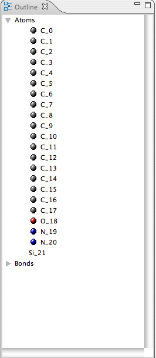

The Outline View shows an outline or brief navigable description of the open editor.
For example, when having a BoioPolymer open in Jmol, the outline displays the
individual monomers. Clicking a monomer highlights it in Jmol. The same is true for
other editors, such as JChemPaint.